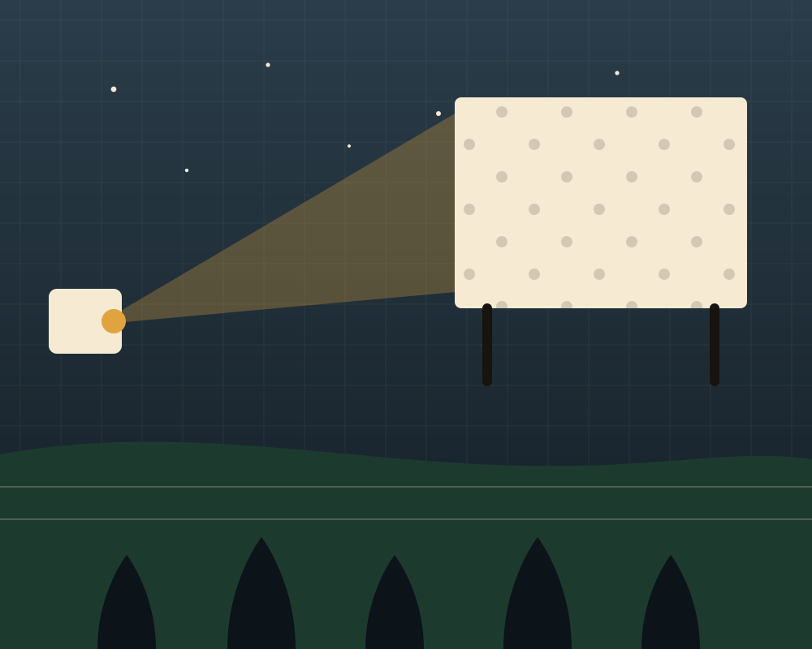

Marina Rocha
Coordinación general
La asociación
Quiénes somos
Catorce años de historia contados por quienes la hacen.
Nuestra historia
Todo empezó con una pantalla en la plaza
En octubre de 2011, un grupo de vecinas y vecinos alquiló una pantalla.
Durante los primeros años fuimos un grupo sin sede.
Hoy somos una asociación cultural y juvenil con equipo estable.
El rural no se recupera con folletos: se recupera haciendo cosas juntos, todas las semanas.

2011
Primera proyección · 60 personas
Misión y valores
Lo que nos mantiene en movimiento
Cuatro compromisos que revisamos cada año en asamblea.
01
Gobernanza abierta
Asamblea mensual, cuentas públicas y junta elegida.
02
Accesibilidad real
Precios asequibles, espacios sin barreras y tres idiomas.
03
Cuidado y comunidad
Acuerdos de convivencia, mediación y mirada atenta.
04
Raíz y territorio
Colaboramos con el tejido local antes que con cadenas de fuera.
320Socios y socias
150+Actividades al año
11Edición del Festín
6Personas en el equipo
Cronología
Catorce años tejiendo red
2011
Primeras proyecciones
El cine en la plaza reúne a 60 personas y se firma el primer acta de la asociación.
2014
Escuela de verano
Arranca el programa juvenil que hoy es la mayor actividad del calendario estival.
2018
Apertura del espacio
El antiguo horno reabre como espacio social, taller y sala con aforo para 180 personas.
2021
Sello de dinamización
Nos incorporamos a la red de espacios de dinamización rural y estrenamos programa de comercio local.
2025
Ampliación del obradoiro
Un segundo taller permite abrir los talleres de oficios a los pueblos del entorno.
Equipo y junta
Las personas que lo hacen posible
Seis personas en el equipo técnico y una junta elegida cada dos años.
Iván Sampedro
Programación cultural
Uxía Castro
Dinamización juvenil
Brais Otero
Patrimonio y territorio
Sara Vilaboa
Formación y gestión
Loïc Bertrand
Comunicación y diseño
Red
Entidades con las que tejemos
Concello de Vilalba
CIF Vilalba
Asociación de Comerciantes
Grupo EFA Terras Altas
Museo da Terra
Cooperativa Muimenta
Escola Oficial de Idiomas
Rede de Dinamización Rural